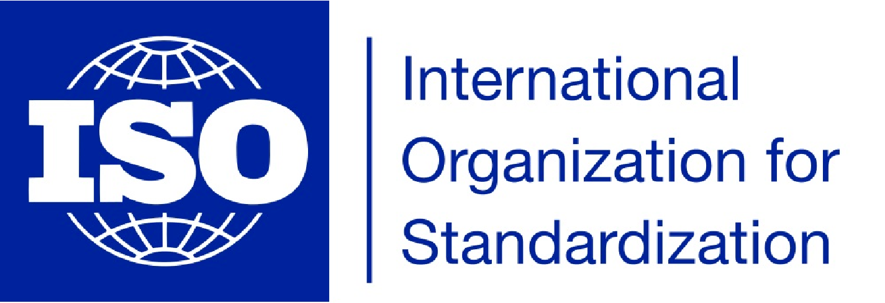

ISO 27001 Compliant
Signalayer is compliant with ISO 27001, the world’s leading standard for information security management. In addition to hosting information on AWS, Signalayer has completed an independent third-party audit of its own management and data systems. This audit involves a rigorous review of our technology infrastructure and operational processes, and represents our commitment to customer security on an ongoing basis.
More information on ISO 27001
Secure data centers
Signalayer’s physical infrastructure is hosted and managed within Amazon’s secure data centers and leverages Amazon Web Services (AWS) and Amazon Elastic Compute Cloud (EC2) technology. The data is physically stored on servers in the United States with backups completed multiple times a day and stored for 30 days.
Amazon continually manages risk and undergoes recurring assessments to ensure compliance with industry standards. Amazon’s data center operations have been accredited under:
AWS also takes measures to comply with any new and changing regulations in the EU and the US, such as:
Secure payment processing
Signalayer does not store or process payments. All payments go through our partner, Stripe, which is a leading global payments system that is PCI DSS compliant.
More information about Stripe security
Secure password handling
All user passwords are hashed. Hashing passwords means we don’t have access to the original passwords, nor does anyone else. So even if our database were compromised, everyone’s passwords would stay secure.
Secure transmission
All communication between Signalayer's servers and the client browser is secured using the industry standard Transport Layer Security (TLS). Only the most relevant and secure level of TLS is accepted (currently 1.2). The connection is encrypted using AES-256 CBC with SHA256 for message authentication and ECDHE RSA as the key exchange mechanism.
Annual security audit
Signalayer conducts annual third party security, including penetration testings on its systems to validate and confirm that there are no technical vulnerabilities that may have been missed.